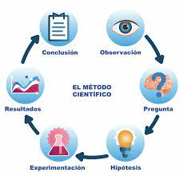

El método científico es una metodología para obtener nuevos conocimientos,
que ha caracterizado históricamente a la ciencia y que consiste en la observación sistemática,
medición, experimentación y la formulación, análisis y modificación de hipótesis.
Las principales características de un método científico válido son la falsabilidad y la reproducibilidad
y repetibilidad de los resultados, corroborada por revisión por pares.
Algunos tipos de técnicas o metodologías utilizadas son la deducción,
la inducción, la abducción, y la predicción, entre otras.
El método científico abarca las prácticas aceptadas por la comunidad científica
como válidas a la hora de exponer y confirmar sus teorías.
No todas las ciencias tienen los mismos requisitos. La experimentación, por ejemplo,
es posible en ciencias como la física teórica.
Este es solo para establecer mis conocimientos
